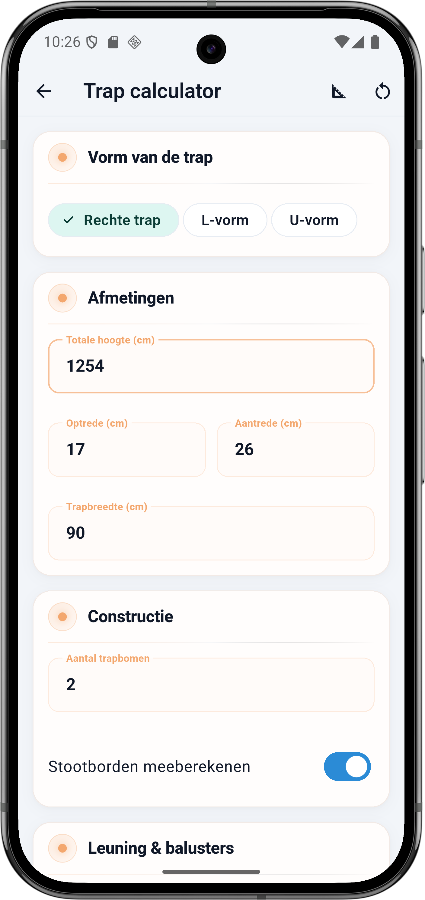
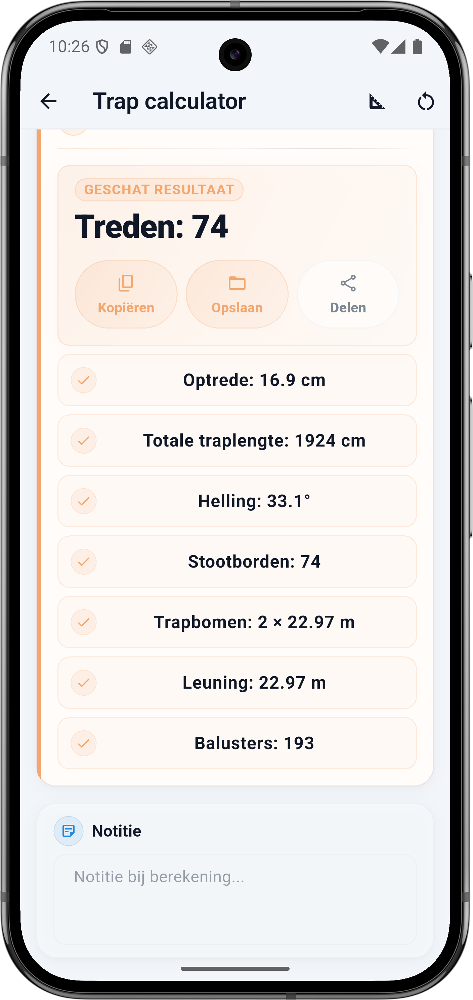

Wat vraagt de calculator
De Trap calculator heeft vier blokken: Vorm van de trap, Afmetingen, Constructie en Leuning en balusters. Elk veld hieronder komt één-op-één overeen met de app.
Vorm van de trap
- Rechte trap — één rechte lijn van onder naar boven. Simpelste berekening, meeste ruimte nodig.
- L-vorm — trap met één tussenbordes dat 90 graden draait. Compacter dan rechte trap.
- U-vorm — trap met twee tussenbordes die samen 180 graden draaien. Minste vloeroppervlak, duurste constructie.
Afmetingen
- Totale hoogte (cm) — van bovenkant benedenvloer tot bovenkant bovenvloer (dus inclusief de dikte van de verdiepingsvloer). Dit is wat de trap moet overbruggen.
- Optrede (cm) — de verticale hoogte van één trede. Comfort: 17 tot 19 cm. Steiler: 19 tot 22 cm (zoldertrap).
- Aantrede (cm) — de horizontale diepte van één trede (waar je voet op komt). Comfort: 24 tot 27 cm. Minimum: 22 cm.
- Trapbreedte (cm) — breedte van de trap. Minimum huisbinnentrap 70 cm, comfort 90 cm, publieke trap minimaal 110 cm.
Constructie
- Aantal trapbomen — meestal 2 (één aan elke kant). Brede trap kan 3 krijgen met een middenboom voor extra steun.
- Stootborden meeberekenen — zet aan als je dichte stootborden (verticale panelen tussen treden) wil. Zet uit voor een open trap zonder stootborden.
💡 Blondel-formule voor comfort
Een trap voelt pas comfortabel aan als 2 × optrede + aantrede uitkomt tussen 60 en 64 cm. Voor 17 cm optrede betekent dat aantrede 26 tot 30 cm — precies waar comfortzone zit. Zoldertrappen vallen vaak buiten die range omdat ze steiler mogen volgens het Bouwbesluit, maar lopen minder prettig.
De formule onder de motorkap
Je gewenste optrede is een richtwaarde — de app rondt het aantal treden naar boven af en herberekent de werkelijke optrede. Zo kom je altijd exact op je totale hoogte uit, want je kunt geen halve trede bouwen.
Rekenvoorbeeld — rechte trap 12,54 m hoog
Dit is de situatie uit de screenshot (buitengewoon hoog om het effect te laten zien): rechte trap van 12,54 m hoog, gewenste optrede 17 cm, aantrede 26 cm, trapbreedte 90 cm, 2 trapbomen, stootborden mee.
Invoer
| Veld | Waarde |
|---|---|
| Vorm | Rechte trap |
| Totale hoogte | 1254 cm |
| Gewenste optrede | 17 cm |
| Aantrede | 26 cm |
| Trapbreedte | 90 cm |
| Aantal trapbomen | 2 |
| Stootborden mee | Ja |
Berekening stap voor stap
- Aantal treden: ceil(1254 ÷ 17) = ceil(73,76) = 74 treden
- Werkelijke optrede: 1254 ÷ 74 = 16,95 → 16,9 cm
- Totale traplengte: 74 treden × 26 cm aantrede = 1924 cm
- Hellingshoek: arctan(1254 ÷ 1924) = arctan(0,652) ≈ 33,1°
- Trapbomen: √(1254² + 1924²) = √5 274 292 ≈ 2297 cm = 22,97 m per boom
- Balusters (leuning): 2297 cm ÷ 12 cm hart-op-hart ≈ 193 balusters
Resultaat
| Onderdeel | Waarde |
|---|---|
| Treden | 74 |
| Werkelijke optrede | 16,9 cm |
| Totale traplengte | 1924 cm |
| Hellingshoek | 33,1° |
| Stootborden | 74 |
| Trapbomen | 2 × 22,97 m |
| Leuning | 22,97 m |
| Balusters | 193 |
⚠️ Vergeet de verdiepingsvloer niet
Veel bouwers meten alleen de ruimte tussen de twee vloeren en vergeten de dikte van de verdiepingsvloer zelf. Een normaal betonnen vloer is 22 tot 30 cm dik, een houten vloer 20 cm met laminaat. Een trap van 254 cm hoog eindigt midden in je verdiepingsvloer als je de vloerdikte niet meerekent.
Comfortzones in Nederland
Het Bouwbesluit stelt minimumeisen; de praktijk kent comfortzones. Voor een nieuwbouwwoning (B categorie) gelden deze waarden:
| Type trap | Optrede | Aantrede | Hoek |
|---|---|---|---|
| Comfortabele binnentrap | 17 – 18 cm | 26 – 29 cm | 30 – 35° |
| Standaard binnentrap | 18 – 20 cm | 22 – 26 cm | 35 – 42° |
| Zoldertrap | 20 – 22 cm | 18 – 22 cm | 42 – 50° |
| Max binnen Bouwbesluit | 22 cm | 22 cm | 45° |
Voor publieke trappen (kantoor, winkel) gelden strengere eisen: optrede max 18,8 cm en aantrede min 22,5 cm. Trappen in woningen boven de derde verdieping worden ook strenger behandeld in verband met vluchtroutes.
Zo doe je dit in BuildExact
- Open de Trap calculator onder Materialen. Kies vorm (Rechte trap, L-vorm, U-vorm).
- Meet totale hoogte van benedenvloer tot bovenvloer (plus vloerdikte). Vul in in cm.
- Zet gewenste optrede en aantrede — 17 en 26 is comfortabel. De calculator rondt het aantal treden af en toont de werkelijke optrede.
- Trapbreedte en trapbomen: breedte min 70 cm, meestal 2 trapbomen. Zet stootborden aan voor een dichte trap.
- Leuning en balusters worden automatisch berekend. Bewaar als project of deel vanuit de resultaatkaart.
Veelgestelde vragen
🪜 Reken je trap in BuildExact
Gratis in de app. Reken, bewaar als project, zet om in een offerte-PDF met je logo — allemaal zonder opnieuw te typen.
Gratis downloaden